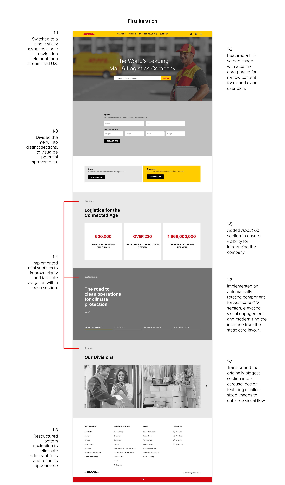
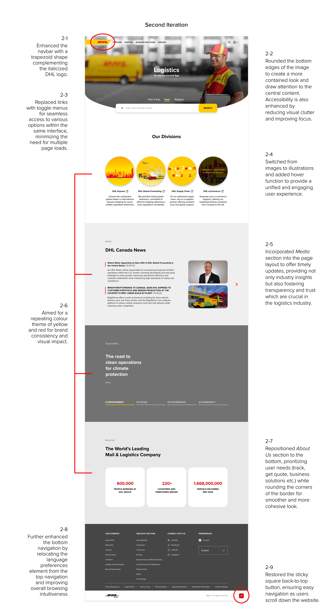

User Pain Point / Problem
Previous Experience on the Main Page
"What's up with these huge images?
... they take up so much space on the screen, making it difficult to navigate and focus on the actual content."
- User 1
"I'm loaded with too much info.
... there are even duplicated links that take you to the same place. It'd be so much better if the website was just a bit simpler."
- User 2
The Need for Website Redesign
Clear Navigation
Aesthetic Appeals
Accessibility
My journey began upon discovering deficiencies in the current UI, including a cluttered layout lacking clear sections, outdated design with huge images, and the presence of multiple duplicate links on a single page. These issues resulted in a disjointed user experience, making navigation confusing and impeding access to desired content. This led me to create a more intuitive and efficient browsing experience for users.
Crafting a Clear Path to Guide Users
To solve the problem, I pursued a comprehensive redesign strategy for the website interface involving restructuring the layout, optimizing image sizes, and removing duplicate links. By addressing these issues, I aimed to enhance the overall user experience, making it more intuitive and efficient for users to access the desired content seamlessly.
 Engaging Users with Clear Visual Design
To visually speak to new customers, I focused on keeping the balance between brand integrity and to provide a refreshing look to the customers.
Throughout this process, I extensively researched design principles, utilizing resources such as Nielsen Norman Group's usability guidelines and Material Design's best practices to uphold design standards and objectives. Additionally, I analyzed websites sharing similar objectives, such as those belonging to logistics companies, in order to gather valuable insights and refine our approach.

streamlined toggle controls for efficient interaction